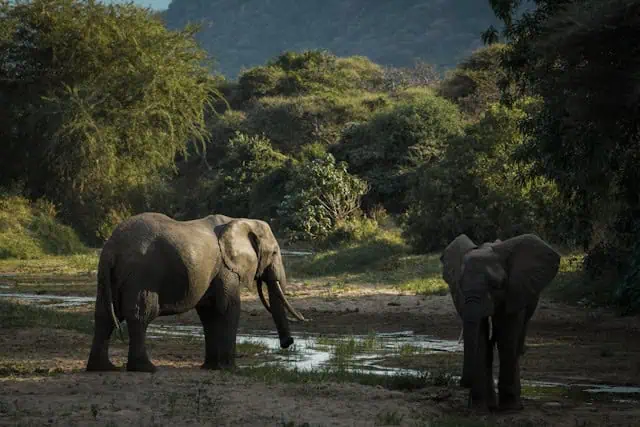
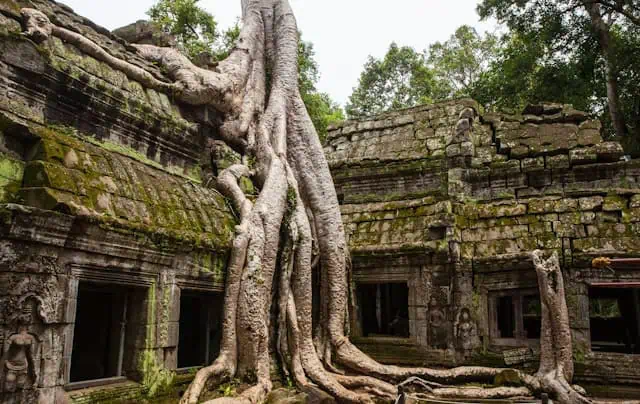
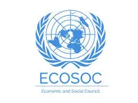
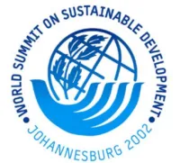
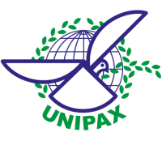
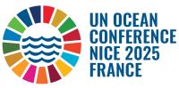

Tầm nhìn của chúng tôi
Một thế giới bền vững, hòa nhập, nơi thiên nhiên và con người cùng nhau phát triển, được thúc đẩy bởi sự công bằng, đổi mới và tinh thần hợp tác toàn cầu.
Sứ mệnh của chúng tôi
Sứ mệnh của chúng tôi là thúc đẩy hành động đổi mới nhằm phục hồi hệ sinh thái, giải quyết biến đổi khí hậu và phát triển cộng đồng vì một thế giới công bằng và kiên cường.
Thông qua các quan hệ đối tác đổi mới, chúng tôi tận dụng sức mạnh tập thể của mạng lưới để nuôi dưỡng các giải pháp bền vững mang lại tác động lâu dài.
Cách tiếp cận của chúng tôi
- Giải pháp Đổi mới: Chúng tôi xác định và triển khai các công nghệ tiên tiến để thúc đẩy sự bền vững.
- Quan hệ đối tác Chiến lược: Chúng tôi xây dựng liên minh với các chính phủ, doanh nghiệp và cộng đồng để mở rộng tác động.
- Đo lường và Tác động: Chúng tôi thiết lập các hệ thống đánh giá chặt chẽ để không ngừng cải thiện các chiến lược.

Mục tiêu chiến lược
Phục hồi Hệ sinh thái: Dẫn đầu và hỗ trợ các dự án phục hồi hệ sinh thái quy mô lớn nhằm cải thiện môi trường bị suy thoái và thúc đẩy đa dạng sinh học.
Nông nghiệp Tái sinh: Vận động và triển khai các phương pháp canh tác tái sinh giúp hồi phục sức khỏe đất, tăng đa dạng sinh học và thu giữ carbon, góp phần vào hệ thống thực phẩm bền vững.
Thích ứng với Biến đổi Khí hậu: Tăng cường khả năng chống chịu khí hậu thông qua các chiến lược thích ứng chủ động, quản lý rủi ro hiệu quả và hỗ trợ các sáng kiến hành động vì khí hậu.
Giáo dục và Nhận thức: Nâng cao nhận thức và giáo dục cộng đồng về các thực hành bền vững, quản trị môi trường và tăng trưởng bao trùm để nuôi dưỡng văn hóa hòa hợp giữa con người và thiên nhiên.

Lịch sử của chúng tôi
Save the Earth International bắt đầu hành trình vào tháng 11 năm 2005. Ban đầu tập trung vào việc xây dựng năng lực tại Campuchia, chúng tôi đã nhanh chóng mở rộng quy mô thành một phong trào môi trường khu vực và toàn cầu.
Năm 2020, chúng tôi tái cấu trúc thương hiệu để làm sâu sắc thêm cam kết đối với các thách thức bền vững toàn cầu và phục hồi hệ sinh thái.
Chứng nhận & Đối tác



